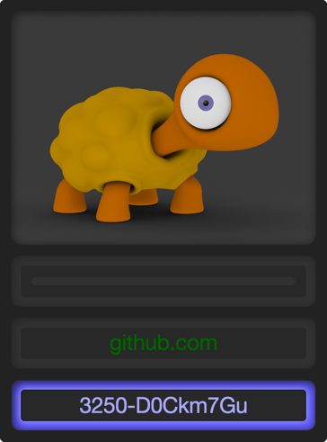
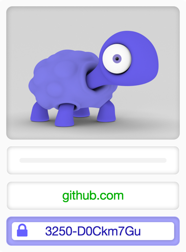

password-turtle is a menu bar application for Mac OS X
What it does
It generates a unique password from 3 ingredients:
- a master key
- a pattern
- a site name
It stores your pattern and site names in an encrypted file on your hard drive.
It makes it easy to have a different password for each site while only needing to remember a single master password.
It reads site names from and writes passwords to the clipboard.
It will log you out after a variable timeout delay.
What it doesn’t
It doesn’t store any passwords.
Instead, each password is generated on the fly via a one-way hash algorithm.
This makes it very easy to setup the program on different computers. Your master key and your default pattern is all you need to access your passwords. Under normal circumstances, you won’t need to copy any file from one machine to another.
The downside is that your passwords are bound to the master key and the pattern: Changing the master key or the pattern will invalidate all your passwords.
How it looks
There are two themes available, a dark and a bright one:

